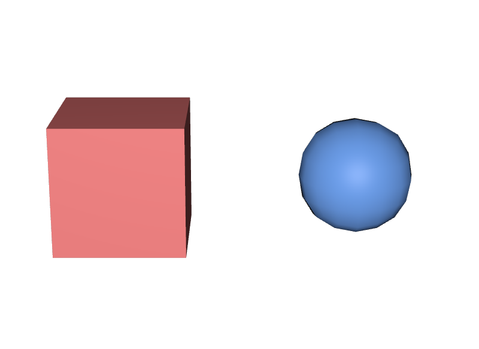
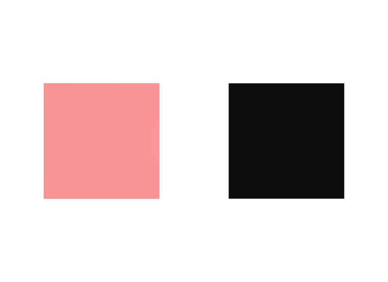
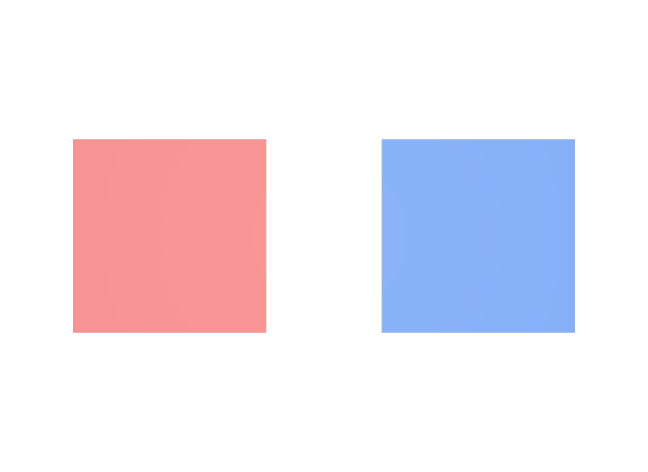

subdivisionSchemeを書かずに「角が丸い」と悩む
既定はcatmullClarkです。角を残したいならnoneを明示します。他のツールから変換したデータでこの1行が抜けていると、意図せず全部が丸くなります。
STEP 23 · MESH ATTRIBUTES
同じトポロジでも、書き忘れた4つで結果が変わります
今日これだけ
公式情報に基づく説明
前のSTEPで、Meshの形は3つの配列で決まると確かめました。ただし、その形がどう解釈され、どう見えるかは、別のAttributeが決めています。ここで扱うのは次の4つです。
uniform token subdivisionSchemeは、書いた多角形をそのまま使うか、細分化して滑らかにするかを決めます。uniform token orientationは、faceVertexIndicesの並べ方から面の表裏をどう決めるかを指定します。uniform bool doubleSidedは、裏側から見たときにも表と同じように扱うかどうかです。float3[] extentは、そのMeshを囲む直方体の最小点と最大点で、中身を読まずに大きさを知るために使われます。
4つとも、書かなければSchemaの既定値（fallback）が使われます。STEP 12で見たとおり、既定値は「値が無い」ではなく「その値である」です。したがって書き忘れても動きますが、意図した見え方になるとは限りません。
Python
from pxr import Gf, Usd, UsdGeom
stage = Usd.Stage.CreateNew("box.usda")
mesh = UsdGeom.Mesh.Define(stage, "/Box")
mesh.CreateFaceVertexCountsAttr([4, 4, 4, 4, 4, 4])
mesh.CreateFaceVertexIndicesAttr([0,1,3,2, 4,6,7,5, 0,4,5,1,
2,3,7,6, 0,2,6,4, 1,5,7,3])
mesh.CreatePointsAttr([Gf.Vec3f(x, y, z)
for x in (-0.5, 0.5)
for y in (-0.5, 0.5)
for z in (-0.5, 0.5)])
for name in ["subdivisionScheme", "orientation", "doubleSided"]:
attr = mesh.GetPrim().GetAttribute(name)
print("%-18s = %-16r authored=%s"
% (name, attr.Get(), attr.HasAuthoredValue()))subdivisionScheme = 'catmullClark' authored=False
orientation = 'rightHanded' authored=False
doubleSided = False authored=Falseauthored=Falseは「このLayerには書いていない」という意味です。それでもGet()は値を返します。この値がSchemaの既定値です。注目すべきはsubdivisionSchemeで、既定はnoneではなくcatmullClarkです。つまり何も書かないMeshは、細分化される前提で扱われます。
USDA
def Mesh "AsWritten"
{
uniform token subdivisionScheme = "none"
int[] faceVertexCounts = [4, 4, 4, 4, 4, 4]
int[] faceVertexIndices = [
0, 1, 3, 2,
4, 6, 7, 5,
0, 4, 5, 1,
2, 3, 7, 6,
0, 2, 6, 4,
1, 5, 7, 3,
]
point3f[] points = [
(-0.5, -0.5, 0.5), (0.5, -0.5, 0.5), (-0.5, 0.5, 0.5), (0.5, 0.5, 0.5),
(-0.5, -0.5, -0.5), (0.5, -0.5, -0.5), (-0.5, 0.5, -0.5), (0.5, 0.5, -0.5),
]
}
def Mesh "Subdivided"
{
uniform token subdivisionScheme = "catmullClark"
# faceVertexCounts・faceVertexIndices・points は AsWritten と完全に同じ
}違いはsubdivisionSchemeの1行だけです。点も面も1つも変えていません。
結果

none、右がcatmullClarkです。データはどちらも8点・6面のまま変わらず、Rendererが細分化した結果だけが違います。examples/lesson-36/subdivision.usda / Apple USD Tools 0.25.2 のusdrecord（Hydra Storm・Metal）/ macOS 26.5.2・Apple M4「箱を書いたのに角が丸い」という現象は、ほぼこれが原因です。角のある形をそのまま出したいときはuniform token subdivisionScheme = "none"を明示します。このサイトのUSDA例が毎回この1行を書いているのは、そのためです。
Diagram
orientation
Faceの表がどちらを向くかは、faceVertexIndicesの並べ方とorientationの組み合わせで決まります。既定のrightHandedでは、面を正面から見たときに反時計回りに番号を並べると、こちら側が表になります。leftHandedにすると、この判定が逆になります。
def Mesh "RightHanded"
{
uniform token orientation = "rightHanded"
int[] faceVertexCounts = [4]
int[] faceVertexIndices = [0, 1, 2, 3]
point3f[] points = [(-0.5, -0.5, 0), (0.5, -0.5, 0), (0.5, 0.5, 0), (-0.5, 0.5, 0)]
}
def Mesh "LeftHanded"
{
uniform token orientation = "leftHanded"
# points も faceVertexIndices も RightHanded と完全に同じ
}
orientationだけが違います。右のleftHandedは面が裏返り、カメラ側にライトが当たらないため真っ黒になりました。examples/lesson-36/orientation.usda / Apple USD Tools 0.25.2 のusdrecord（Hydra Storm・Metal）/ macOS 26.5.2・Apple M4「モデルが黒くなる」「見る角度によって消える」という不具合の多くは、面の向きが揃っていないことが原因です。他のツールから変換してきたデータでよく起こります。
doubleSided
doubleSided = trueを指定すると、裏側から見た面も表と同じように扱われます。上のLeftHandedに1行足すだけで、見え方が変わります。
def Mesh "LeftHanded"
{
uniform token orientation = "leftHanded"
uniform bool doubleSided = true
# それ以外は orientation.usda と同じ
}
doubleSided = trueを足すと、裏返っていた面も表と同じように描かれます。examples/lesson-36/doublesided.usda / Apple USD Tools 0.25.2 のusdrecord（Hydra Storm・Metal）/ macOS 26.5.2・Apple M4extent
extentは、そのGprimを囲む直方体を[(最小点), (最大点)]の2つの点で表したものです。pointsを全部読めば計算できますが、それでは点が何百万個あるMeshで毎回全部読むことになります。extentを書いておけば、Rendererや選択処理は2点を読むだけで大きさを判断できます。
from pxr import Usd, UsdGeom
print("authored?", mesh.GetExtentAttr().HasAuthoredValue())
bounds = UsdGeom.Boundable.ComputeExtentFromPlugins(
mesh, Usd.TimeCode.Default())
print("Compute :", [tuple(v) for v in bounds])
mesh.CreateExtentAttr(bounds)
print("authored?", mesh.GetExtentAttr().HasAuthoredValue())authored? False
Compute : [(-0.5, -0.5, -0.5), (0.5, 0.5, 0.5)]
authored? TrueComputeExtentFromPluginsは計算するだけで、書き込みはしません。CreateExtentAttrへ渡して初めてファイルに残ります。pointsを後から変えたら、extentも計算し直す必要があります。古いextentが残っていると、実際の形より小さい箱が申告され、画面の端で急にモデルが消えるといった不具合になります。
STEP 78で扱うextentsHintは、この考え方をAsset全体へ広げたものです。
USDA → Python mapping
USDA
uniform token subdivisionScheme = "none"↓Python
mesh.CreateSubdivisionSchemeAttr("none")USDA
uniform token orientation = "leftHanded"↓Python
mesh.CreateOrientationAttr(UsdGeom.Tokens.leftHanded)USDA
uniform bool doubleSided = true↓Python
mesh.CreateDoubleSidedAttr(True)USDA
float3[] extent = [(-0.5, -0.5, -0.5), (0.5, 0.5, 0.5)]↓Python
mesh.CreateExtentAttr(bounds)USDA
normal3f[] normals = [...]↓Python
mesh.CreateNormalsAttr([...])normalsとst
Meshにはもう2つ、よく一緒に出てくるデータがあります。どちらも形そのものではなく、形の上に載る情報です。
normal3f[] normalsは面の向きを表す法線で、UsdGeomMeshが持つ普通のAttributeです。名前にprimvars:が付きません。書かなければ、Rendererがトポロジから計算します。
UV座標はtexCoord2f[] primvars:stというPrimvarとして書きます。こちらはprimvars:が付きます。Primvarが何かは次のSTEPで扱いますが、ここでは「法線とUVは置き場所が違う」ことだけ押さえておきます。
| データ | 書き方 | Primvarか | 既定のinterpolation |
|---|---|---|---|
| 法線 | normal3f[] normals | いいえ | vertex |
| UV座標 | texCoord2f[] primvars:st | はい | 指定して書く（多くはfaceVarying） |
よくある間違い
既定はcatmullClarkです。角を残したいならnoneを明示します。他のツールから変換したデータでこの1行が抜けていると、意図せず全部が丸くなります。
面が裏を向いているとライトが当たりません。まずorientationとfaceVertexIndicesの並び順を疑います。doubleSided = trueで見えるようになったなら、原因は向きだと確定できます。
extentは自動で追随しません。形を編集するコードを書いたら、ComputeExtentFromPluginsで計算し直して書き戻します。
Attribute宣言の頭に付くuniformは「時間で変化しない」という意味です。Primvarのinterpolation = "uniform"は「Faceごとに1個」という意味です。綴りは同じでも指しているものが違います。
UsdGeomMeshが定義しているのはnormalsで、primvars:は付きません。付けて書くと、Schemaのnormalsとは別のCustom Primvarができてしまい、多くのRendererは無視します。
Glossary
none・catmullClark・loop・bilinearがあり、既定値はcatmullClark。faceVertexIndicesの並べ方から面の表裏を決める規則。rightHanded（既定）とleftHandedがある。false。float3[]。uniformとは別の意味。normal3f[]。Primvarではない。primvars:stという名前で書くのが慣習。Official references
確認日: